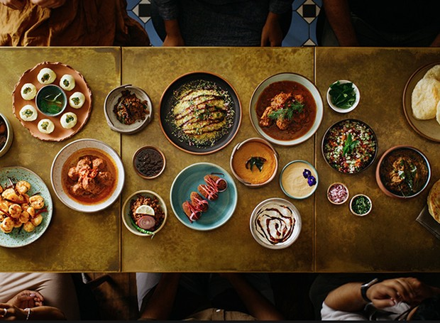

Para as amantes da culinária, nada mais precioso do que o seu próprio caderno de receitas, repleto de opções tradicionais, alguns segredos de família e seus pratos favoritos. Aprenda receitas fáceis e rápidas, com fotos e vídeos explicativos. Receitas de doces, pratos diet e light, bolos, receitas vegetarianas e muito mais. A ideia é ser criar um site colaborativo, uma espécie de caderno de receitas compartilhado que reunisse os tradicionais biscoitos de família e as novas descobertas na cozinha.